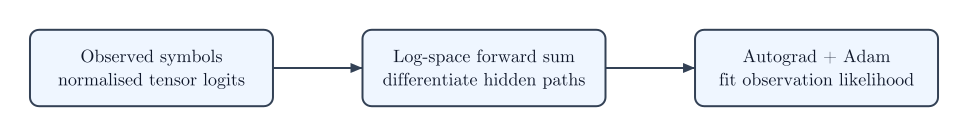
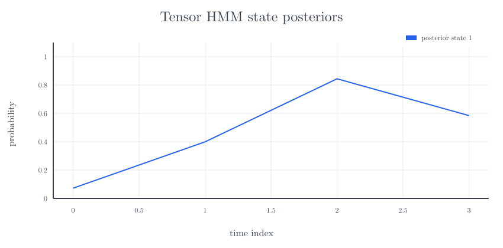
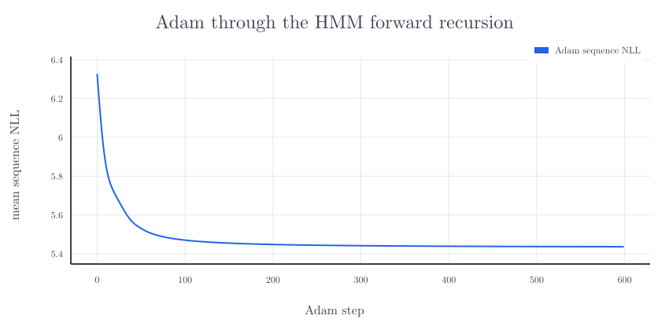
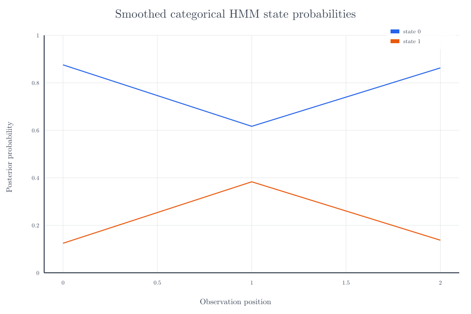
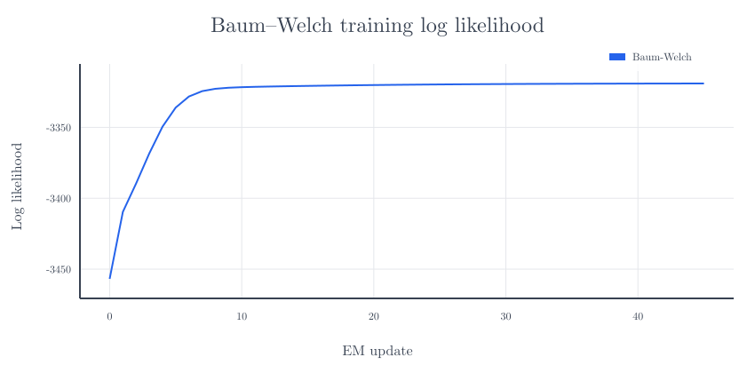

Hidden Markov Models: Sum Paths, Select Paths and Learn
Abstract
A sequence of observed symbols can be generated by hidden states that evolve over time. We compare total sequence likelihood, state posterior probabilities and the most likely path on a four-symbol example with only sixteen possible paths. A visible Adam loop fits normalised tensor logits by differentiating the observation likelihood, without hidden-state labels.
The method
An HMM specifies initial masses pi, transition probabilities A and emission probabilities B. A joint path probability multiplies one initial mass, each emission and each transition. Forward inference sums over earlier states, while Viterbi replaces that sum with a maximum:
The library forward recursion uses log-sum-exp to avoid underflow. The derivative of log likelihood with respect to a time-specific log emission potential is its smoothed state posterior: differentiating the sum over paths weights the indicator of that state by the posterior path mass. For fitting, log_softmax normalises initial, transition and emission logits, and the visible Adam loop minimises mean negative log likelihood. This direct gradient fit is distinct from Baum–Welch; Adam has no per-step monotonicity guarantee and can reach a local optimum. Inference costs O(TK²) rather than enumerating K^T paths. State names may permute. Posterior marginals need not form the Viterbi path, and the best path's joint probability cannot exceed total sequence probability. All state inference and fitting use tensor operations. Tiny-path tensor enumeration independently checks both the summed likelihood and the posterior; it also identifies the most likely path.
The concept diagram below is drawn by dm::graphics::Diagram. Its editable C++
source is the complete block below; regeneration uses the same datamunge toolchain
as the numerical examples. Exports consume the saved local SVG.
#include <dm/dm.hpp>
int main() {
std::filesystem::create_directories("build");
dm::graphics::Diagram diagram;
diagram.node("n0", {0.0, 0}, "Observed symbols\nnormalised tensor logits");
diagram.node("n1", {5.2, 0}, "Log-space forward sum\ndifferentiate hidden paths");
diagram.node("n2", {10.4, 0}, "Autograd + Adam\nfit observation likelihood");
diagram.edge("n0", "n1").edge("n1", "n2");
diagram.save_svg("build/hidden_markov_models_concept.svg");
}
Simple examples
The initial distribution is (.6,.4), transition rows (.8,.2),(.3,.7), and emission rows (.65,.3,.05),(.05,.25,.7). We enumerate every path for observations 0,1,2,1.
#include <dm/dm.hpp>
int main() {
namespace n = dm::nn;
const auto dtype = n::DType::Float64;
const auto pi = n::tensor({.6, .4}, {2}, dtype);
const auto A = n::tensor({.8, .2, .3, .7}, {2, 2}, dtype);
const auto B = n::tensor({.65, .3, .05, .05, .25, .7}, {2, 3}, dtype);
const auto observations = n::from_vector(std::vector<int64_t>{0, 1, 2, 1}, {1, 4});
auto evidence = n::gather(n::transpose(n::log(B)), observations).detach().requires_grad_();
const auto ll = n::ml::hmm_log_likelihood(n::log(pi), n::log(A), evidence);
// A derivative with respect to local log evidence is the state posterior.
const auto posterior = n::grad(n::sum(ll), {evidence})[0];
std::vector<int64_t> states;
for (int code = 0; code < 16; ++code)
for (int t = 0; t < 4; ++t)
states.push_back((code >> (3 - t)) & 1);
const auto paths = n::from_vector(states, {16, 4});
auto log_mass = n::gather(n::log(pi), n::select(paths, 1, 0));
for (int t = 0; t < 4; ++t) {
const auto emission = n::select(n::log(B), 1, observations.at({0, t}));
log_mass = log_mass + n::gather(emission, n::select(paths, 1, t));
if (t) {
const auto index = 2 * n::select(paths, 1, t - 1) + n::select(paths, 1, t);
log_mass = log_mass + n::gather(n::reshape(n::log(A), {4}), index);
}
}
const auto total = n::logsumexp(log_mass), best = n::max(log_mass);
const auto weights = n::softmax(log_mass, 0);
const auto enumerated =
n::sum(n::one_hot(paths, 2, 1, 0, dtype) * n::reshape(weights, {16, 1, 1}), {0});
const double error = n::max(n::abs(n::reshape(posterior, {4, 2}) - enumerated)).item();
if (std::abs(total.item() - ll.item()) > 1e-12 || error > 1e-12)
return 1;
const auto best_path = n::gather(paths, n::argmax(log_mass));
auto p = dm::graphics::RPlot::create();
p.lines({0, 1, 2, 3}, n::select(n::reshape(posterior, {4, 2}), 1, 1).to_vector<double>(),
"posterior state 1", {37, 99, 235})
.title("Tensor HMM state posteriors")
.x_label("time index")
.y_label("probability")
.y_limits(0, 1.1);
std::filesystem::create_directories("build");
p.size(850, 420).save_svg("build/hidden_markov_models_posteriors.svg");
std::print("Sequence probability {:.12f}; best path probability {:.12f}; best path {}; "
"posterior error {:.12f}.\n",
n::exp(ll).item(), n::exp(best).item(), best_path.to_vector<int64_t>(), error);
}Sequence probability 0.007732580000; best path probability 0.002293200000; best path [0, 0, 1, 1]; posterior error 0.000000000000.

Checking the theory
#include <dm/dm.hpp>
int main() {
namespace n = dm::nn;
const auto dtype = n::DType::Float64;
const auto observations =
n::from_vector(std::vector<int64_t>{0, 0, 0, 1, 2, 2, 2, 2, 1, 0, 0, 0, 0, 1, 0,
1, 2, 2, 2, 2, 2, 1, 0, 0, 0, 0, 1, 2, 2, 2},
{5, 6});
auto initial = n::log(n::tensor({.5, .5}, {2}, dtype)).detach().requires_grad_();
auto transition =
n::log(n::tensor({.6, .4, .4, .6}, {2, 2}, dtype)).detach().requires_grad_();
auto emission =
n::log(n::tensor({.55, .3, .15, .15, .3, .55}, {2, 3}, dtype)).detach().requires_grad_();
auto likelihood = [&]() {
const auto evidence = n::gather(n::transpose(n::log_softmax(emission, 1)), observations);
return n::ml::hmm_log_likelihood(n::log_softmax(initial, 0), n::log_softmax(transition, 1),
evidence);
};
n::OptimizerConfig config;
config.kind = n::OptimizerKind::Adam;
n::Optimizer optimizer({initial, transition, emission}, .03, config);
const double start = n::sum(likelihood()).item();
std::vector<double> step, nll;
for (int i = 0; i < 600; ++i) {
const auto loss = -n::mean(likelihood());
step.push_back(i);
nll.push_back(loss.item());
optimizer.minimize(loss);
}
n::NoGradGuard guard;
const double final = n::sum(likelihood()).item();
const double row_error = n::max(n::abs(n::sum(n::softmax(transition, 1), {1}) - 1)).item();
if (final <= start || row_error > 1e-12)
return 1;
auto p = dm::graphics::RPlot::create();
p.lines(step, nll, "Adam sequence NLL", {37, 99, 235})
.title("Adam through the HMM forward recursion")
.x_label("Adam step")
.y_label("mean sequence NLL");
std::filesystem::create_directories("build");
p.size(850, 420).save_svg("build/hidden_markov_models_adam.svg");
std::print(
"Initial/final total log likelihood {:.9f}, {:.9f}; transition row error {:.12f}.\n",
start, final, row_error);
}Initial/final total log likelihood -31.636255693, -27.181357299; transition row error 0.000000000000.

Conclusion
The tensor forward recursion and its evidence gradients agree with all sixteen enumerated paths. Direct Adam training improves the unlabelled sequence likelihood and keeps probability rows normalised. It does not promise monotonic updates or identify unique hidden-state labels.
References
- [Rabiner (1989), A tutorial on hidden Markov models and selected applications in speech recognition](https://doi.org/10.1109/5.18626).
Scaled posterior and a single Baum–Welch update
dm::nn::ml::HiddenMarkovModel now preserves the old common helper's scaled
probability-space forward/backward calculation, Viterbi path and one Baum–Welch
update. It accepts normalized Float64 probability tables and Int32 symbol IDs.
The returned posterior is detached; the earlier log-space objective remains the
API to use when differentiating through evidence. The caller owns EM iterations.
Zero-count rows retain their previous probabilities; impossible sequences throw.
#include <dm/dm.hpp>
int main(){namespace n=dm::nn;n::ml::HiddenMarkovModel model(2,2,3);n::ml::HmmState state{n::from_vector(std::vector<double>{.6,.4}),n::from_vector(std::vector<double>{.7,.3,.4,.6},{2,2}),n::from_vector(std::vector<double>{.5,.5,.1,.9},{2,2})};auto observations=n::from_vector(std::vector<std::int32_t>{0,1,0},{1,3});auto result=model.Run(observations,state);auto next=model.Run(observations,result.next);std::print("Sequence log likelihood: {:.9f}; after one EM update: {:.9f}.\n",result.log_likelihood.item<double>(),next.log_likelihood.item<double>());if(next.log_likelihood.item<double>()<result.log_likelihood.item<double>()-1e-12)return 1;auto posterior=n::reshape(result.posterior,{3,2});dm::graphics::RPlot::create().lines({0,1,2},n::select(posterior,1,0).to_vector<double>(),"state 0",{37,99,235}).lines({0,1,2},n::select(posterior,1,1).to_vector<double>(),"state 1",{234,88,12}).title("Smoothed categorical HMM state probabilities").x_label("Observation position").y_label("Posterior probability").y_limits(0,1).save_svg("build/common_hmm_posterior.svg");}Sequence log likelihood: -2.664760853; after one EM update: -1.869496714.

Baum–Welch on held-out sequences
Fit the upstream two-state, three-symbol model to 160 sequences. Use hidden labels only to evaluate the decoded path on 60 independent sequences. Since the fit can swap state names, evaluate both labelings.
#include <dm/dm.hpp>
int main() {
namespace n=dm::nn;
constexpr auto type=n::DType::Float64;
std::mt19937 rng(101);
auto sample=[&](int count) {
std::vector<int> observations, hidden;
std::discrete_distribution<int> initial{.6,.4};
std::array transitions{std::discrete_distribution<int>{.8,.2},std::discrete_distribution<int>{.3,.7}};
std::array emissions{std::discrete_distribution<int>{.65,.3,.05},std::discrete_distribution<int>{.05,.25,.7}};
for(int i=0;i<count;++i) {
int state=initial(rng);
for(int t=0;t<20;++t) {
hidden.push_back(state);
observations.push_back(emissions[state](rng));
if(t+1<20) state=transitions[state](rng);
}
}
return std::pair{n::from_vector(observations,{count,20}),n::from_vector(hidden,{count,20})};
};
const auto [train,train_hidden]=sample(160);
const auto [test,truth]=sample(60);
const n::ml::HiddenMarkovModel model(2,3,20);
n::ml::HmmState state{n::tensor({.5,.5},{2},type),n::tensor({.6,.4,.4,.6},{2,2},type),
n::tensor({.55,.3,.15,.15,.3,.55},{2,3},type)};
std::vector<double> steps,likelihood;
for(int step=0;step<=45;++step) {
const auto result=model.Run(train,state);
const double ll=n::sum(result.log_likelihood).item();
if(!std::isfinite(ll)||(!likelihood.empty()&&ll<likelihood.back()-1e-8))
throw std::runtime_error("Baum-Welch decreased the likelihood");
steps.push_back(step);
likelihood.push_back(ll);
if(step<45) state=result.next;
}
const auto result=model.Run(test,state);
const auto decoded=result.path.to_vector<int>(), expected=truth.to_vector<int>();
int correct=0;
for(std::size_t i=0;i<decoded.size();++i) correct+=decoded[i]==expected[i];
const double accuracy=std::max(correct,1200-correct)/1200.;
if(likelihood.back()<=likelihood.front()+40 || accuracy<=.75 ||
n::max(result.viterbi_score-result.log_likelihood).item()>1e-12 ||
n::max(n::abs(n::sum(result.posterior,{2})-1)).item()>1e-12)
throw std::runtime_error("Held-out HMM check failed");
dm::graphics::RPlot::create().lines(steps,likelihood,"Baum-Welch",{37,99,235})
.title("Baum–Welch training log likelihood").x_label("EM update")
.y_label("Log likelihood").size(850,420).save_svg("build/hidden_markov_em.svg");
std::print("Training likelihood {:.3f} to {:.3f}. Held-out mean log likelihood {:.4f}; Viterbi accuracy {:.2f}%.\n",
likelihood.front(),likelihood.back(),n::mean(result.log_likelihood).item(),100*accuracy);
}Training likelihood -3456.859 to -3319.057. Held-out mean log likelihood -20.6518; Viterbi accuracy 83.83%.
